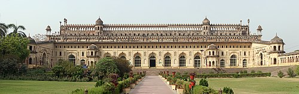
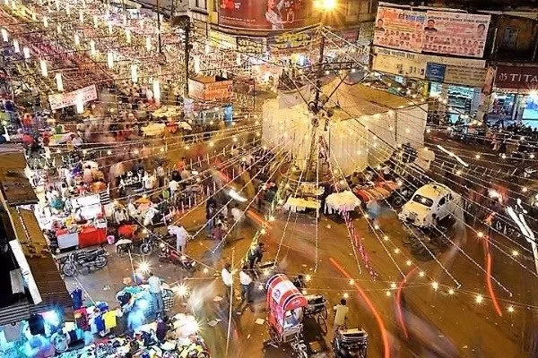
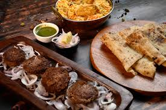

1. Explore Bara Imambara
Visit the iconic Bara Imambara, a grand architectural marvel built
in 1784. Discover its intricate design, the famous Bhulbhulaiya
(labyrinth), and the serene Asfi Mosque within the complex.

2. Shop at Aminabad Market
Experience the vibrant atmosphere of Aminabad Market, one of the
oldest and busiest markets in Lucknow. Shop for traditional
Chikankari embroidery, jewelry, and handicrafts while enjoying the
lively street scenes.

3. Eat local Food
Indulge in the rich flavors of Lucknow's street food. Don't miss out
on trying kebabs, biryanis, and the famous Tunday Kababi. Explore
local eateries and food stalls for an authentic culinary experience.